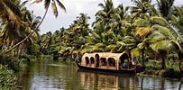

Kumarakam
Kumarakom,situated 13 Kms away from Kottayam is a sleepy little village on Vembanad Lake in Kerala. It offers wide variety of flora, exotic sightseeing, boating and fishing experience.
Vembanad Lake
The vast array of rivers and canals that Kottayam is blessed with, empty themselves into the picturesque Vembanad Lake. It is a lovely place to go for a picnic and has also turned into a prominent backwater destination. There are many boating, fishing and sightseeing options available in the area.

Arikkuzhi waterfalls
Aruvikkuzhi is a beautiful picnic spot and an ideal shooting location for movies. Located in the midst of rubber plantations, it is an ideal place for trekking.